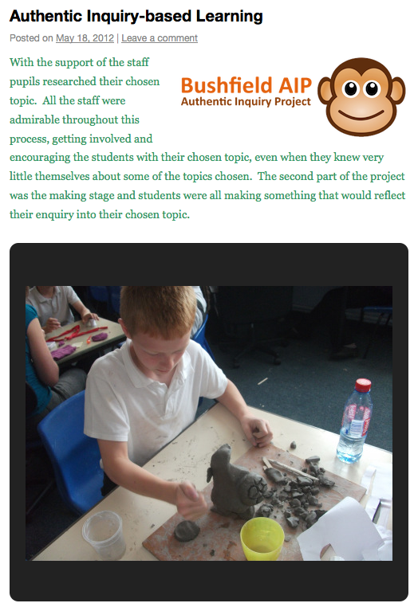

(This is a part of the Deeper Learning Story Bank. Add your story!)
Story title: Why didn’t I get an ice cream?
Submitted by: Simon Buckingham Shum
Bushfield School, Wolverton / Open Univ. / Bristol Univ.
DL story: STORY CONTEXT
At Bushfield School, Wolverton, a multi-cultural primary school of about 300, in an area with some social deprivation, we are embedding learning dispositions and authentic inquiry methodologies into the DNA of the school in a long term programme, which started about 5 years ago: http://bushfieldschool.net/learning
We started by adopting the language for learning that has come from the University of Bristol Grad School of Education, called Learning Power, which has arrived at very similar conclusions and pedagogies to Carol Dweck’s mindsets research, and provides a self-diagnostic survey tool called ELLI which makes one’s dispositions visible: http://bushfield.wordpress.com/2012/01/07/assessing-our-learning-power
Through continued work with Ruth Deakin Crick at Bristol, we have now started using a methodology called Authentic Inquiry* which gives students a lot of voice and choice about the focus of their inquiry projects, which must be on something they care about, and are run over 10 days with the whole curriculum cleared for this (apart from PE). We are trying to understand how well this works with primary age children (UK Years 5-6, aged 9-11) — e.g. how well can different ability children cope with such freedom, what scaffolds are needed, how do teachers monitor the progress of 30 different projects…?
A movie documenting a recent “AIP” (Authentic Inquiry Project) by Year 5, in which they all worked on a Fashion Show, is due out shortly, plus a report documenting it in detail. I’ll add links to these when they’re up. Blog posts with some photos at http://bushfield.wordpress.com/tag/aip
THE STORY
Here’s a story illustrating just one learning journey. A Yr 6 girl, not an academic high flyer, chose as her focal object/person/place a photo of herself on the beach as a toddler. The AIP interview with her went something like this:
“Why did you choose this photo for your AIP?”
“Because it was a summer holiday at the seaside that I always looked forward to.”
“Who’s that in the photo?”
“My brother and sister.”
“What’s going in the photo?”
“Well, that day I asked mum for an ice cream, but she had said no. But then later my big brother got one, and when my little sister asked, she did too.”
“How did that make you feel?”
“Sad. Left out.”
“So what did you do next in your AIP then?”
“When I talked to my teacher about my photo, I learnt that there’s something called Middle Child Syndrome, which is all about children like me who sometimes feel left out. So then I wanted to research that.”
“How did you do that?”
“I went on the web and learnt all about it, and then I designed a questionnaire to give to other middle children in the class, and videoed them talking about it.”
This précis illustrates how one moves in the Authentic Inquiry methodology from a concrete object/person/place, through a process of close observation, then questioning, into bigger questions, which then begin to connect with the wider funds of knowledge out there. Staff reported that they had never seen her so engaged in her learning, and rated the impact for her (they did this for all pupils) as transformational. For others, this was not the case, especially with lower literacy levels, and those with learning difficulties, with lower self-regulation.
TRACKING PROGRESS IN PERSONALISED DEEP LEARNING
It’s a challenge to monitor the progress of 30 different AIPs in a given class. One approach we’ve trialled for 3 AIPs now is having all students blog in a period reserved for this at the end of each day. They use a specially extended version of the WordPress platform that we developed, called EnquiryBlogger: info and open source WordPress Multisite plugins: http://learningemergence.net/tools/enquiryblogger.
This requires pupils to add categories to their posts which reflect the dimensions of Learning Power that they feel they are evidencing in the blog. E.g. “Resilience” when things really go wrong that day; “Curiosity” when they find themselves seeking out new information; “Learning Relationships” when they found that a peer could help them.
The tool then aggregates a visual spidergram as feedback to them on all the learning power dimensions they have blogged about, and the teachers get a dashboard of the whole class. It’s early days yet, it’s rough at the edges, but we have some encouraging results. A talk about this including a demo and student quotes are here: http://people.kmi.open.ac.uk/sbs/2012/06/enquiryblogger-seminar
* The academic grounding for the Authentic Inquiry pedagogy is detailed in this article:
Deakin Crick, Ruth (2009). Inquiry-based learning: reconciling the personal with the public in a democratic and archaeological pedagogy’, Curriculum Journal, 20:1,73-92. Open Access Eprint

Categories:
Collaborating, Self-directing learning, Believing in yourself (academic mindsets), Doing relevant, engaging work, Making things